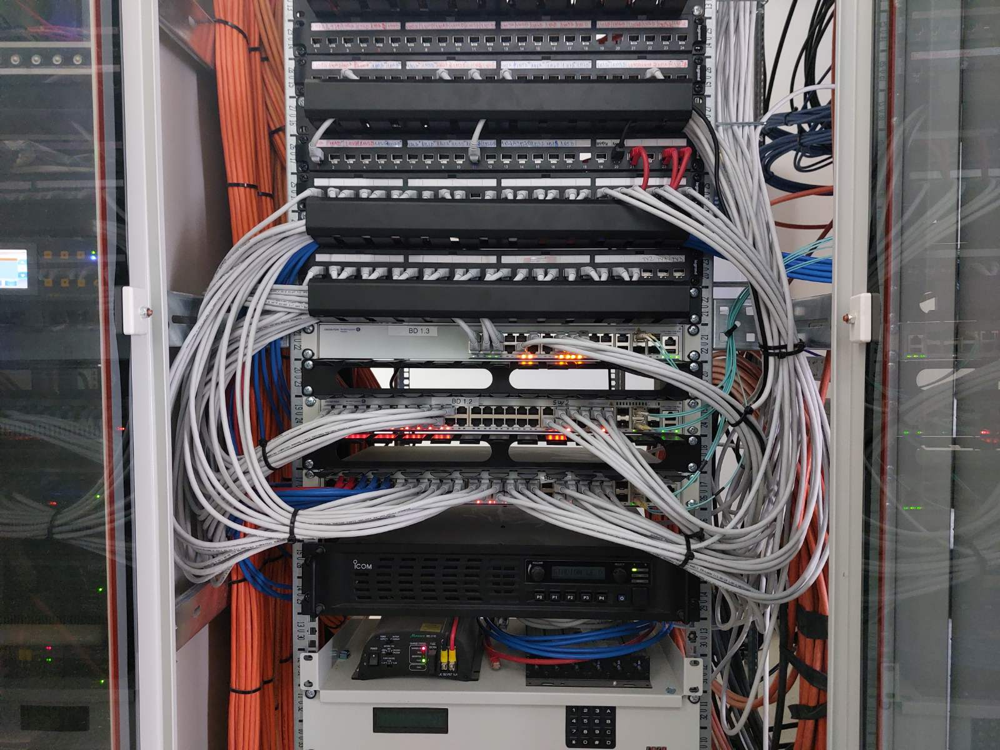

LAN i WAN infrastruktura
Projektovanje i implementacija žične mrežne infrastrukture za povezivanje lokacija i sistema.


Projektujemo, implementiramo i optimizujemo mrežnu infrastrukturu za sigurnu, stabilnu i skalabilnu povezanost u poslovnim, hotelskim, zdravstvenim i industrijskim okruženjima.
Kvalitetna mrežna infrastruktura predstavlja osnovu savremenih IT, AV i bezbednosnih sistema. Zato TR Services pristupa mrežnim rešenjima sistemski, sa fokusom na pouzdanost, performanse, sigurnost i mogućnost budućeg razvoja. Svaki projekat projektuje se u skladu sa realnim potrebama korisnika, tipom objekta i očekivanim opterećenjem sistema.
Projektovanje i implementacija žične mrežne infrastrukture za povezivanje lokacija i sistema.
Bežična pokrivenost za poslovne i javne prostore, prilagođena gustini korisnika i tipu prostora.
Kontrolisan pristup mreži za goste i korisnike, uz jednostavnu prijavu i upravljanje.
Organizacija saobraćaja po servisima i zonama, radi sigurnosti i preglednosti sistema.
Unapređenje dostupnosti, propusnosti i sigurnosti postojeće mrežne infrastrukture.
Mrežna infrastruktura ne može biti univerzalna. Zahtevi kancelarijskog prostora, hotela, bolnice ili industrijskog pogona se značajno razlikuju. Zbog toga mrežna rešenja prilagođavamo konkretnim uslovima rada, gustini korisnika, tipu servisa i očekivanoj dostupnosti. Posebna pažnja posvećuje se stabilnosti i dugoročnoj održivosti sistema.

Mreža je osnova preko koje funkcionišu telefonija, IPTV, digital signage, video wall, sistemi kontrole pristupa, CCTV i druge tehnološke celine. Zato svako mrežno rešenje projektujemo kao deo šireg integrisanog sistema, uz jasno definisanu strukturu, preglednost i mogućnost jednostavnijeg upravljanja i održavanja.

Dobro projektovana mreža mora da bude spremna i za današnje i za buduće zahteve. Naš pristup uključuje planiranje kapaciteta, preglednu organizaciju infrastrukture, rezervu za širenje sistema i podršku za buduće servise i dodatne lokacije. Rezultat je mreža koja nije samo funkcionalna, već predstavlja pouzdanu osnovu za dalji rast poslovanja.

Kontaktirajte nas za konsultacije i predlog mrežne infrastrukture prilagođene vašem objektu, broju korisnika i tipu servisa koji se oslanjaju na mrežu.
Kontaktirajte nas